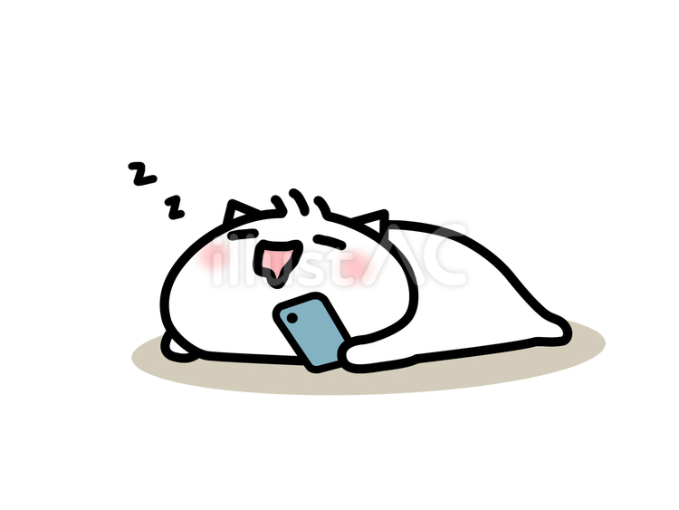
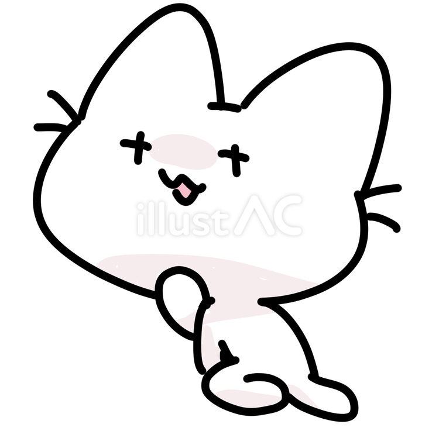
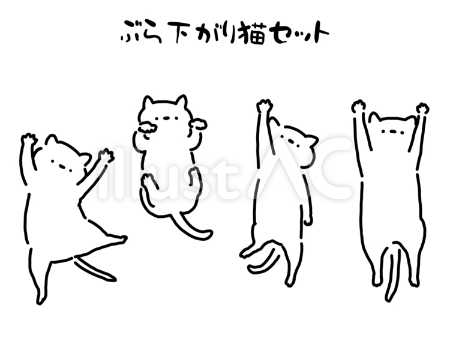

| John sleeps because... | Sleep is healthy. When you sleep, you get to rest. This can give you energy for the next day. That enery will help you to get reasonable things done. |  |
|---|---|---|
| John wakes up because... | Waking up starts the day. When you wake up, you can eat, learn, and play. This helps you grow and enjoy life. It gives you chances to do new things. |  |
| John dances with his friends because... | Dancing is fun. When you dance, you move your body and feel happy. This makes your heart healthy and keeps you active. It also helps you share joy with others. |  |
At Sunshine Volunteers, we care about health, happiness, and growth for everyone involved.
Just like John, who wakes up ready to learn and do new things, our volunteers are given chances to explore, grow, and make a difference every day.
We also believe, like John dancing with friends, that fun and joy are just as important as hard work — so we create moments where people can connect, laugh, and share happiness together.
And just like John getting his rest through healthy sleep, we value balance and energy, making sure our volunteers feel supported and recharged so they can keep helping others.
At Sunshine Volunteers, we know that caring for yourself and caring for others go hand in hand, and that’s what makes our community shine.
Click here to return to the game.